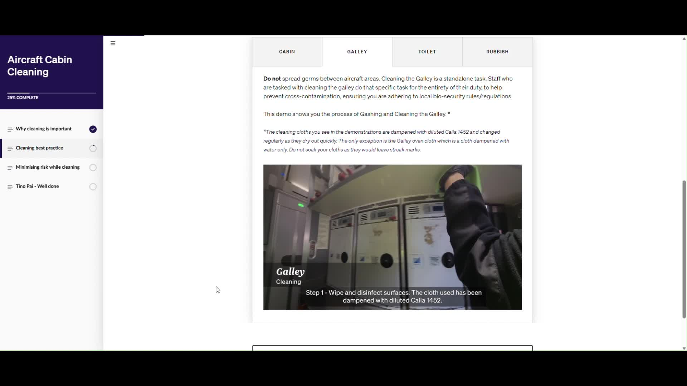
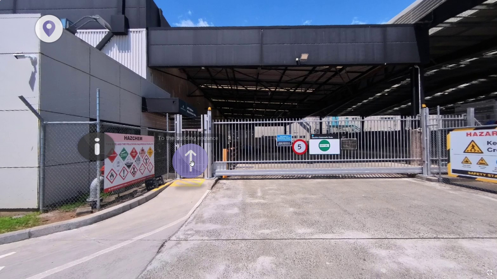

Ground Stability
Transforming complex aviation safety concepts into an interactive Storyline experience through visual storytelling, After Effects animations and scenario-based assessment.
Explore case study →Digital, experiential and immersive learning built around the knowledge people need, when they need it.
EXPLORE MY WORK ↓Transforming complex aviation safety concepts into an interactive Storyline experience through visual storytelling, After Effects animations and scenario-based assessment.
Explore case study →
Preparing new employees for practical cabin-cleaning tasks through an Articulate Rise experience with 360° POV instructional videos.
Explore case study →
From animation storyboard and narration to completed motion design.
Explore case study →A collaborative learning needs analysis exploring experiential and blended approaches to performance gaps and assessment readiness.
Explore case study →Talking-head video and notification animation supporting realistic workplace communication.
Explore case study →I combine ADDIE and SAM approaches with adult learning principles, experiential learning and visual storytelling. I establish measurable learning objectives using Bloom’s Taxonomy, collaborate with SMEs to prioritise essential knowledge, and design meaningful practice and formative and summative assessment. Learner feedback informs continuous improvement.
Self-directed identity, brand guidelines and motion-design exploration. The brand created by myself during a design challenge.
Brand guidelines ↗Short-form visual storytelling, pacing and editing. Designed as part of a design challenge. All videos included are scourced from youtube.
A visual simulation of a communication trigger. A short animation created to show staff what incoing text messages will look like and how to respond to them when you are being requested for deployment.
I blend instructional design methodologies, adult learning and visual storytelling with Storyline, Rise, CenarioVR, 360° filmmaking and motion design. I believe great learning is targeted, accessible, actionable and memorable.
Selected projects were produced during my employment with Air New Zealand and AA Insurance. My contributions are identified in each case study. Examples are shown with permission.